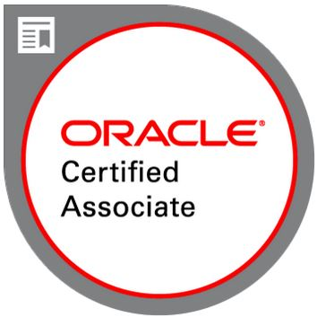

Anuroop Vijayaraj
Data Engineer ( Oracle Retail Predtive Applicaion Server (ORPAS), Database - Sql/PlSql & Automation developer)
Oracle Retail Planning & Merchandising & RPA Consultant
|
Anuroop VijayarajData Engineer ( Oracle Retail Predtive Applicaion Server (ORPAS), Database - Sql/PlSql & Automation developer)
|
 |
Oracle Consultant having around 12 years of IT experience. Having 8 + years' experience in Oracle retail, mainly in Retail predictive solutions (RPAS) solutions like - RDF/MFP/AP/IP/SPO along with Retail Merchandising System (RMS). Also expertised in oracle database technologies (SQL, PLSQL,Oracle Data integrator). Strong Foundation in Robotic Process automation ( RPA ) frameworks like UiPath. Certified Oracle Associate in Oracle Cloud Infrastructure (OCI) Foundations 2020 & “Data Engineering with Hadoop & Spark”from EICT IIT Roorkee.
|
|